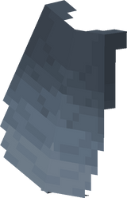
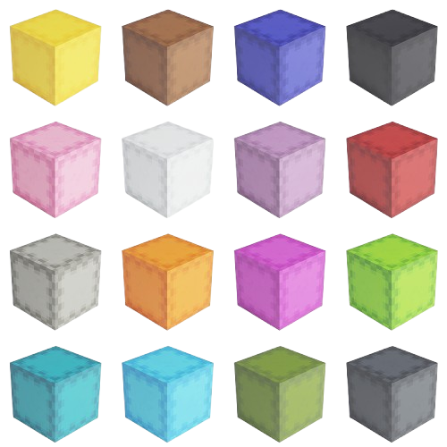

Parabéns!
Se você chegou aqui provavelmente já dominou a superfície e explorou as profundezas do Nether. Agora é a hora do maior desafio, o End, o fim do jogo e a fronteira para os bons jogadores. Boa sorte!
Mas antes, não se preucupe, pois aqui estão ãs informações para você não sofrer na batalha final! Não precisa agradecer!
Como Entrar no End
Para entrar no end, você precisa achar o Portal do End, estrutura que fica no subterrâneo da superfície. Para localizá-lo e ativá-lo, você precisa de olhos do ender, criados com pérolas do fim e varas de blaze.
Depois que tiver os olhos, você pode jogá-los e eles irão flutuar na direção do portal. Assim que chegar na sala do portal, coloque os olhos nos blocos de portal que não tiverem já preenchidos, com isso, o portal se acenderá.
Hora da luta
Assim que você entrar no End, a luta começa. O dragão do End já espera por você. Ele tem 200 pontos de vida e se regenera usando os cristais do fim. Para derrotá-lo, você deve destruir cada um dos cristais, que estão em cima de pilares de obsidiana.
Depois de destruir todos os cristais, é hora de atacar. Acerte o drgão com flexas e quando ele descer até o chão, ataque-o com sua espada.

Explorando as cidades do End
Depois de derrotar o dragão do End, você liberará uma passagem do End. Utilizando-a, você poderá acessar o End exterior, aonde crescem frutas do coro e também aonde estão localizadas as cidades do End.
Essas são estruturas enormes que vão até grandes alturas. Elas são relativamente difíceis de explorar, mas se você tiver grande habilidade e boa armadura, não terá dificuldade. O único mob que está presente nessas estruturas é o shulker. Eles são perigosos, pois atiram projéteis que te fazem flutuar. Esse efeito pode te derrubar de alturas grandes ou até te jogar no void!
Mesmo com os shulkers, vale muito a pena ir nas cidades do End pois elas tem baús com armaduras fortemente encantadas, diamantes e outros itens valiosos, além de dois itens principais que vou falar agora.
Quebrando fronteiras: Shuker box e Elytra
Quando você vai para as cidades do End, a sua experiência com o jogo é mudada drasticamnete por causa de dois itens em específico.
O primeiro deles é a caixa de shulker. Ela é construída com duas cascas de shulker (drop dos shulkers) e um baú. O motivo de esse item ser tão incrível é porque ele funciona como um baú, mas pode ser armazenado dentro do seu inventário. Isso possibilita que você expanda seu inventário para um nível gigantesco. Elas também podem ser pintadas com corante para persolnalizá-las.
O segundo item é a Elytra. Ela pode ser encontrada em barcos do End, que tem uma chance de estarem nas cidades do End. Equipando-as no lugar do peitoral da armadura, elas permitem que você plane pelo ar, ajudando á impedir mortes por queda. E se você tiver fogos de artifício, feitos com papel e pólvora, você pode dar impulsos de velocidade com a elytra, voando a grandes velocidades, fazendo dela o melhor méio de transporte do jogo.


Zerei, e agora?
Se você já fez todas as coisas que eu falei no site, então você já zerou o jogo e já rompeu barreiras incríveis. Mas nesse momento pode surgir um sentimento de: o que eu faço agora?
O jogo pode parecer sem graça e sem desafios nesse momento. Mas isso pode ser bom. Os montros não serão mais uma ameaça, já que provavelmente sua armadura já é muito forte. Por isso você pode construir projetos colossais de construção. Nessa parte do jogo o único limite é a sua imaginação. Realize seus sonhos de criação! Explore as cidades ancetrais da superfície! Se quiser, pode até criar um novo mundo para fazer tudo de novo. Você é o rei desse jogo. Boa sorte!